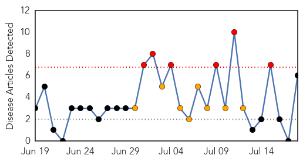
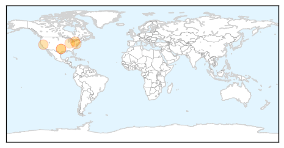
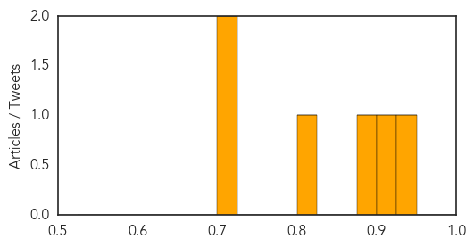
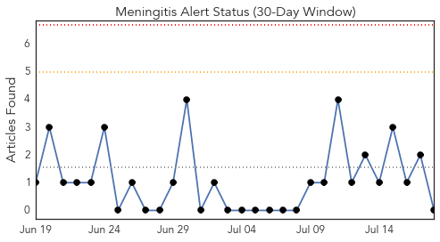
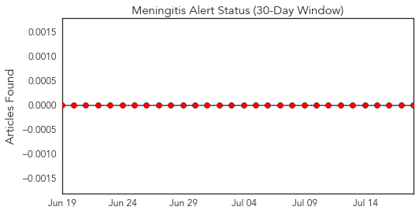
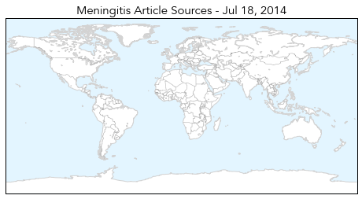
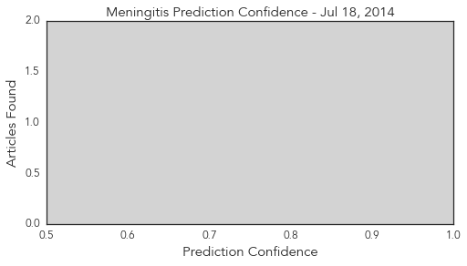

West Nile Virus
30-Day Web Trend
6 alerts, 2 warnings

30-Day Twitter Trend
0 alerts, 0 warnings

Article Locations
Article Confidences
Top Articles:
- 0.936
- Bird tests positive for West Nile in El Dorado Co.
- 0.909
- Marin Coast / Sonoma Coast Guide
- 0.898
- Year’s first two human cases of West Nile virus reported in Dallas County, in Coppell and Preston Hollow
- 0.812
- State Health Officials Urge Md. Residents To Take Precautions Against West Nile Virus « CBS Baltimore
- 0.722
- City of Dallas reports first human West Nile Virus case
- 0.715
- Keep insects under control
Top Tweets:
-
No tweets found for Jul 18, 2014
Meningitis
30-Day Web Trend
0 alerts, 0 warnings

30-Day Twitter Trend
0 alerts, 0 warnings

Article Locations
Article Confidences
Top Articles:
-
No articles found for Jul 18, 2014
Top Tweets:
-
No tweets found for Jul 18, 2014